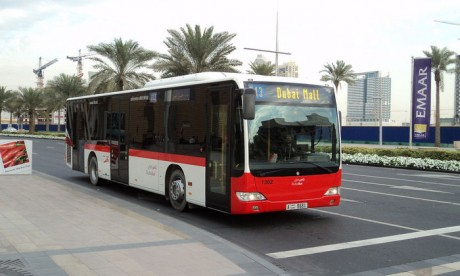

Инфраструктура города
Георграфия города
Расположен на берегу Персидского залива к северо-востоку от столицы — Абу-Даби по соседству с Шарджей. Географические координаты: 25°27' северной широты, 55°33' восточной долготы. Длина города составляет 134 км, ширина — 35 км.
Районы города:
Бур-Дубай — исторический центр;
Гарденс — спальный район;
Даунтаун — строящийся деловой район города;
Дейра — восточная торговая часть города;
Джумейра — приморский жилой район;
Дубай Марина — жилой район вокруг рукотворного залива на западе города.
Общественный транспорт
